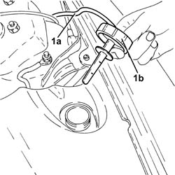

0010T47 HYDRAULIC SYSTEM FLUID FOR GEARBOX WITH HYDRAULIC SELECTION CHECK LEVEL AND TOP UP IF NECESSARY
- Path
- Procedures > 00 MAINTENANCE > 0010 UNITA' NUOVE E MANUT. PROGRAMMATA > 0010T VEHICLE OIL AND FLUIDS > 0010T47 HYDRAULIC SYSTEM FLUID FOR GEARBOX WITH HYDRAULIC SELECTION CHECK LEVEL AND TOP UP IF NECESSARY
- Kind
- repair procedure (removal / refitting; the operation number is the code)
- Applies to
- engines: 2.0 JTS; all production periods; only with equipment: Smart gearbox
- Interactive page
- https://sloeber94.github.io/elrnDB-aGt/en/#/125000840
Applies to: engines: 2.0 JTS; all production periods
.
Turn the ignition key to the ON position.
1. Disconnect the breather pipe (1a), remove the cap (1b) and check that the level corresponds to the MAX reference on the dipstick which is part of the actual cap.

Applies to: engines: 2.0 JTS; all production periods; only with equipment: Smart gearbox
If the level is below the MAX mark, add the recommended fluid until the level is correct.
Type | Component | Description | Qty. | |
|---|---|---|---|---|
- | Fluid [I] | HYDRAULIC GEARBOX HYDRAULIC SYSTEM | TUTELA CAR CS SPEED | 0.6 |
Retighten the cap and fully insert the breather pipe in the cap.
Turn the ignition key to the OFF position.
Topics that link to this page (24)
- 0010K20 20,000KM SERVICE COUPON, EMISSION CONTROL VERSION
- 0010K40 40,000KM SERVICE COUPON, EMISSION CONTROL VERSIONS
- 0010K60 60,000KM SERVICE COUPON - EMISSION CONTROL VERSIONS
- 0010K80 80,000KM SERVICE COUPON - EMISSION CONTROL VERSIONS
- 0010M01 100,000KM SERVICE COUPON, EMISSION CONTROL VERSIONS
- 0010M20 120,000KM SERVICE COUPON, EMISSION CONTROL VERSIONS
- 0010M40 140,000KM SERVICE COUPON - EMISSION CONTROL VERSIONS
- 0010M60 160,000KM SERVICE COUPON - EMISSION CONTROL VERSIONS
- 0010M80 180,000KM SERVICE COUPON - EMISSION CONTROL VERSIONS
- 1004B24 POWER UNIT WITH MANUAL GEARBOX WITH HYDRAULIC SELECTION - R R
- 1020D36 FLYWHEEL END OIL SEAL - REPLACE FOR MANUAL GEARBOX WITH HYDRAULIC SELECTION VERSIONS
- 1024B11 ENGINE FLYWHEEL - R R FOR MANUAL GEARBOX WITH HYDRAULIC SELECTION VERSIONS
- 1810A28 CLUTCH - R R FOR MANUAL GEARBOX WITH HYDRAULIC SELECTION VERSIONS
- 1820A24 THRUST BEARING LINKAGE - R + R
- 2110A11 MANUAL GEARBOX WITH DIFFERENTIAL - R R FOR VERSIONS WITH HYDRAULIC SELECTION
- 2110C24 SEALS FOR GEARBOX INPUT SHAFT - R R FOR MANUAL GEARBOX WITH HYDRAULIC SELECTION VERSIONS
- 2127C10 SUPPORT FOR HYDRAULIC CIRCUIT RESERVOIR AND SYSTEM PUMP - R R
- 2127C12 HYDRAULIC GEAR SELECTION FLUID RESERVOIR - R R
- 2127C18 PIPE FROM HYDRAULIC CIRCUIT FLUID RESERVOIR TO HYDRAULIC SPEED SELECTION DRIVE PUMP - R R
- 2127C20 PIPE FROMPUMP TO HYDRAULIC SPEED SELECTION ACTUATOR UNIT - R R
- 2127C22 PIPE FROM HYDRAULIC SPEED SELECTION ACTUATOR UNIT TO FLUID RESERVOIR - R R
- 2127C30 HYDRAULIC SPEED SELECTION SYSTEM PUMP - R R
- 2127C40 HYDRAULIC SPEED SELECTION HYDRAULIC ACTUATOR UNIT AND CLUTCH - R R
- 2127E50 HYDRAULIC SELECTION GEARBOX CIRCUIT PRESSURE SENSOR - R R